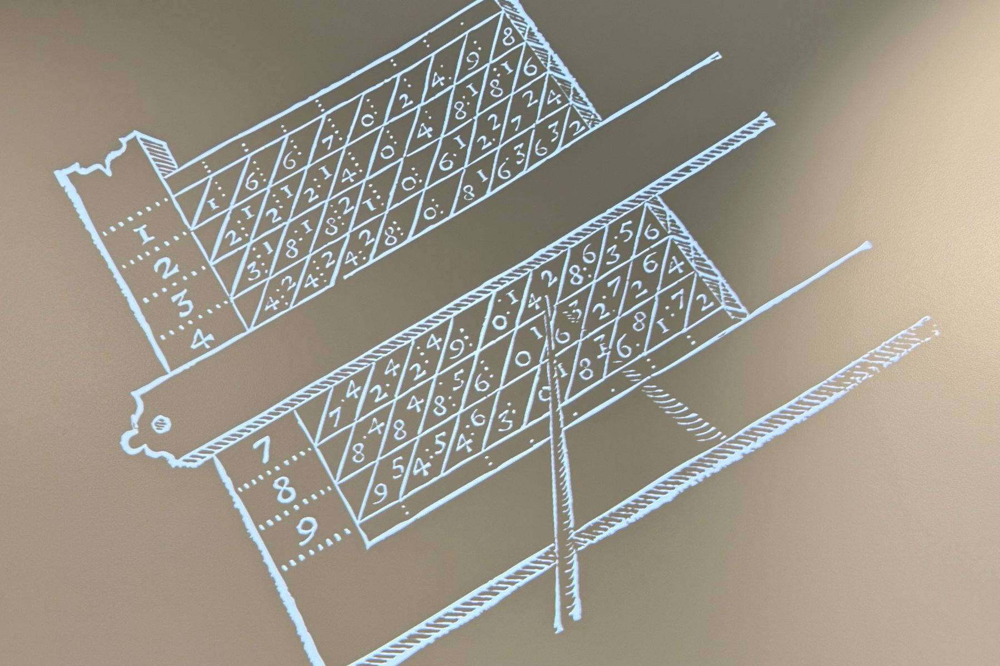
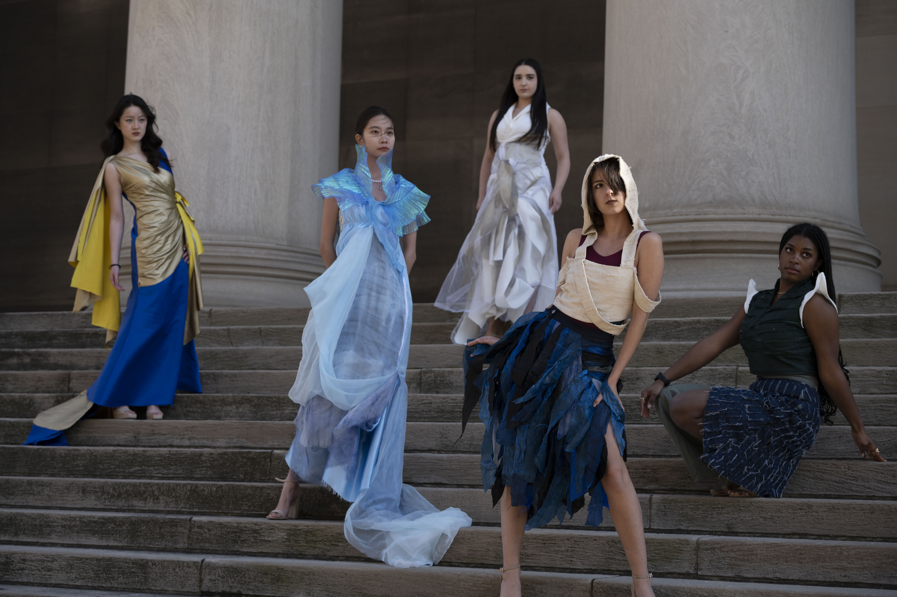
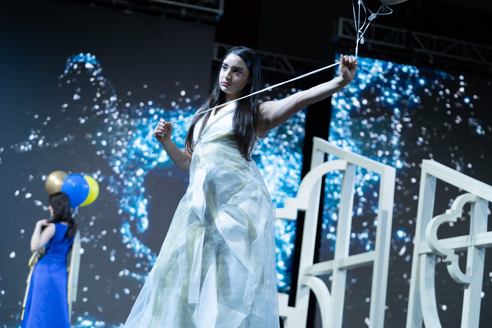
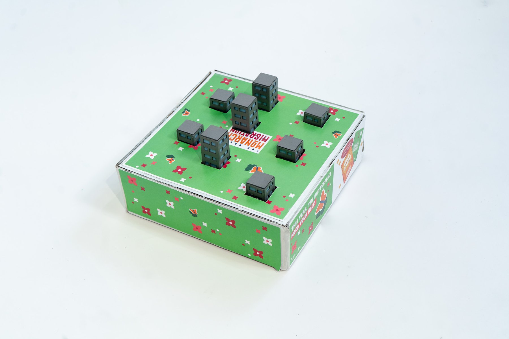
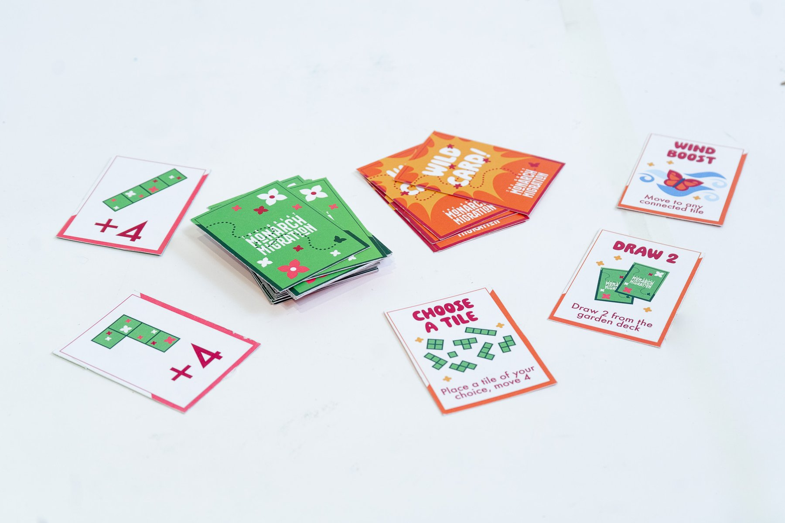
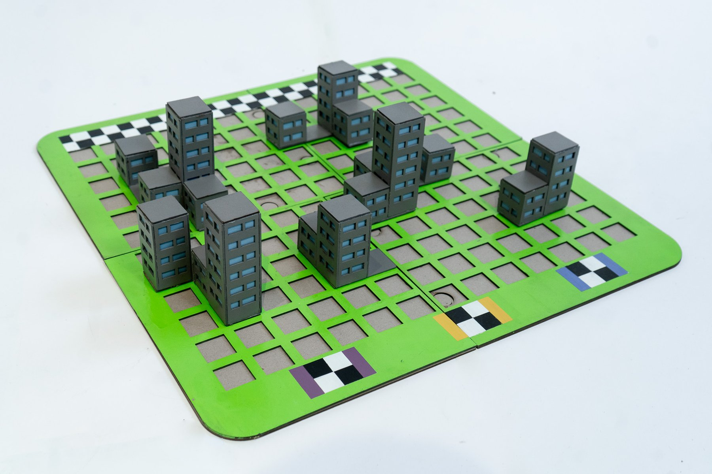

Yubo Zhang — designer working across interfaces, products, and environments at Carnegie Mellon University
I'm Yubo, from Harbin, China, and now based in Pittsburgh. I design experiences across interfaces, physical products, and environments. I'm interested in how technology can connect these different scales of interaction and make the way people engage with products, spaces, and systems more intuitive and meaningful. Currently, I'm studying Design & PM at Carnegie Mellon University.
I believe great products are built at the intersection of user needs, technological possibilities, and market opportunities. Design is the bridge that brings them together.
I'm passionate about emerging technologies and drawn to projects that bring technology and creativity together to unlock new possibilities.
Projects
Forbes Crossing

Hybrid Exhibition: Napier
Restless Mind


Lethe


